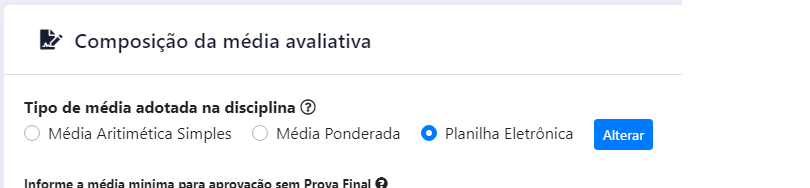
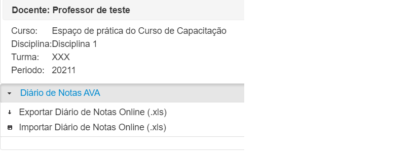
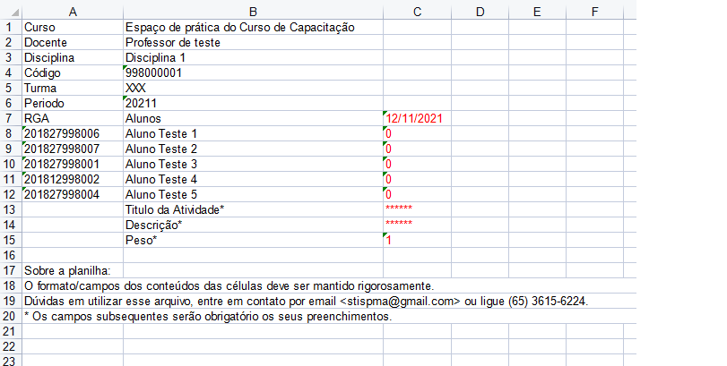
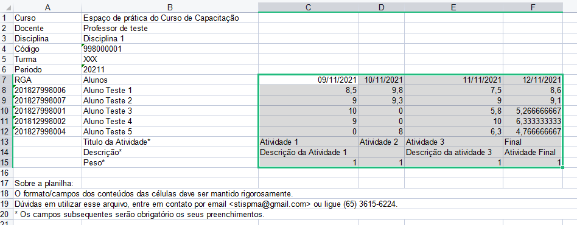
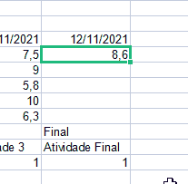
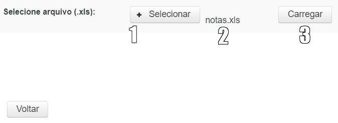
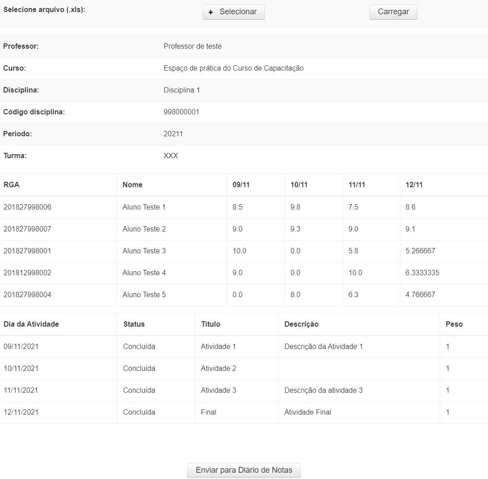
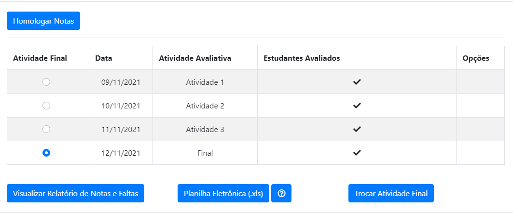
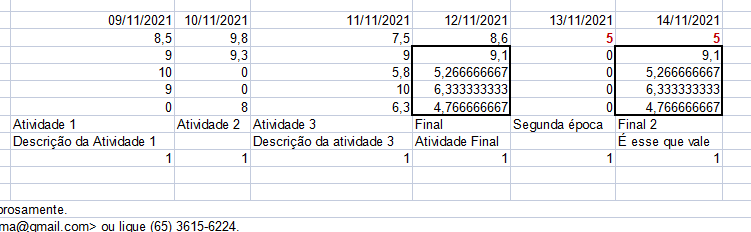

Manual para lançamento de notas via Planilha Eletrônica
O Lançamento de Notas possui a opção de realizar o registro por Planilha Eletrônica, permitindo o registro de qualquer tipo de cálculo diretamente no arquivo Excel.
Quando o docente carregar o arquivo Excel, o sistema irá entender por padrão que a última atividade lançada no arquivo como sendo a atividade final. É a nota dessa atividade que será registrada em histórico na eventual homologação do Lançamento de Notas.
Nessa planilha eletrônica o docente pode utilizar a forma que desejar para calcular as diversas atividades que ministrou. No entanto, caso deseje adicionar ou remover atividades, deve realizar os procedimentos de importação e exportação novamente.
Como utilizar
Para lançar as notas pelo arquivo Excel, primeiro o docente deve alterar o registro da disciplina.
Isso é feito no campo 'Tipo de média adotada para disciplina', conforme a Figura 1. O docente deve escolher a opção 'Planilha Eletrônica' e depois clicar no botão 'Alterar'.
 Figura 1 - Tipo de média adotada
Uma mensagem de sucesso deve ser informada pelo sistema.
Depois de alterada, no fim da página do Lançamento de Notas será exibido o botão 'Planilha Eletrônica', conforme a Figura 2. Para prosseguir basta o docente clicar no botão.
Figura 2 - Botão Planilha Eletrônica
Depois de clicar no botão será exibida uma nova página, conforme a Figura 3.
Nessa página o docente tem os dados da disciplina e as opções 'Exportar Diário de Notas Online' e 'Importar Diário de Notas Online'.
 Figura 3 - Exportar e importar diário
Exportar diário de notas
Para baixar o arquivo Excel que será usado como modelo para o registro das notas, o docente deve clicar no botão 'Exportar Diário de Notas Online'.
Um arquivo será baixado, tendo o formato semelhante ao da Figura 4.
 Figura 4 - Arquivo Excel em branco
Destacados em vermelho estão os dados que podem ser editados.
Para realizar o registro da atividade basta que o docente preencha os dados destacados. Para lançar uma nova atividade basta repetir o lançamento na coluna D, E, F e assim por diante.
O primeiro campo que deve ser preenchido é a data da atividade. O formato é o DD/MM/AAAA, como na Figura 4. As datas das atividades lançadas no arquivo Excel não podem ser repetidas.
Abaixo da data e na linha que representa cada aluno, deve ser inserida a nota do aluno. A nota do aluno não pode ficar vazia.
Na sequência, depois do preenchimento da nota de todos os alunos, são apresentados os campos para informação do nome da atividade, da descrição e do peso.
O nome da atividade é obrigatório. É esse nome que será exibido no Portal Acadêmico. A descrição é um campo opcional.
O peso é um campo obrigatório e tem o valor padrão 1. Esse campo tem a função de auxiliar no preparo do cálculo mas deve ser aplicado no cálculo pelo docente.
ATENÇÃO
Qualquer preenchimento fora desse padrão descrito pode impedir a correta importação do arquivo pelo sistema.
Caso seja necessário manter observações ou outros registros no arquivo Excel, recomenda-se salvar uma cópia do arquivo com essas observações.
Na Figura 5 é apresentado um exemplo do arquivo Excel preenchido com as atividades e respectivas notas de cada discente
 Figura 5 - Arquivo Excel preenchido
Por padrão, a última coluna de atividade preenchida no Excel será considerada como atividade final.
Fórmulas do Excel
É possível aplicar fórmulas no Excel para auxiliar no cálculo das notas. Abaixo segue alguns exemplos:
- Para o cálculo de média simples,
=SOMA(C8:E8)/3, onde:C8:E8é o intervado de atividades lançadas no Excel e3é o número de ativdades lançadas
- Para o cálculo de média ponderada,
=((C8*C$15)+(D8*D$15)+(E8*E$15))/(C$15+D$15+E$15), onde:(C8*C$15)é a nota da atividade multiplicada pelo seu respectivo peso. Note o sifrão na célula do peso. Essa anotação serve para dizer que esse valor é fixo
Depois que preenchida primeira célula com a fórmula, basta repetir nas demais linhas. Para isso clique com o botao do mouse no canto inferior direito da célula e arraste até preencher todas as linhas que representam os alunos, conforme mostra a Figura 6.

Figura 6 - Replicando a fórmula no Excel
Importar diário de notas
Para importar o arquivo Excel com as notas preenchidas, o docente deve clicar no botão 'Importar Diário de Notas Online'.
Figura 7 - Exportar e importar diário
Na tela seguinte o docente deve clicar no botão 'Selecionar' para escolher o arquivo e depois clicar no botão 'Carregar' para processar os lançamentos realizados.
 Figura 8 - Importar diário preenchido no Excel
Se o arquivo Excel foi preenchido conforme as instruções dadas em Exportar diário de notas, a tela seguinte exibirá os dados preenchidos no arquivo para que o docente possa conferir antes de enviar.
 Figura 9 - Conferência do arquivo importado
Finalizada as conferências, para enviar as notas clique em 'Enviar para Diário de Notas'.
 Figura 10 - Atividades enviadas
Outras situações
Alunos novos
Caso exista um novo aluno na turma, basta baixar a planilha novamente. O novo arquivo virá preenchido com os discentes que tiveram as notas preenchidas previamente e virá também com os novos discentes, estes sem ter a nota nas atividades.
Observe que a fórmula aplicada previamente não estará nesse novo arquivo baixado, por isso é importante manter uma cópia do arquivo enviado.
Prova Final, Exame Final ou Exame de Segunda Época
Caso o curso tenha a previsão de realizar uma Prova Final, Exame Final ou Exame de Segunda Época, o docente usar o Excel para esse registro mas precisa ter cuidado no lançamento.
Como informado, a última coluna de atividade preenchida no Excel será considerada como atividade final. Assim, para que os discentes que não tiveram que fazer esse novo exame não sejam prejudicados com o lançamento vazio dessa nota, o docente deve, além de registrar a atividade relativa à nova nota, criar uma nova atividade.
Nessa nova atividade será registrada tanto a nota final do discente que teve prova final (ou qualquer outro tipo de nota) quanto a nota final já calculada dos demais discentes.
 Figura 10 - Segunda época